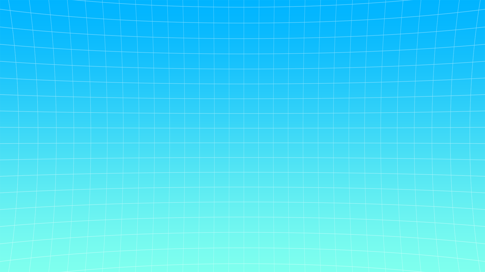

Short story
I've been interested in programming since childhood. I started with Scratch and later switched to the Unity game engine. It was a big leap, but I never regretted it. Besides programming, I enjoy graphic design, video editing, animation, UI/UX design, and I love organizing collaborative projects.
The only problem I have is that when I come up with three big ideas, I want to make all of them, which can feel impossible to handle alone as a hobby.
I confidently use C#, Python, and Kotlin, and I've experimented with several other languages as well.
Some of my programs

Koller
The plan is to build an advanced, automated student hostel system. There are currently seven of us working on it, and we're aiming to include every function a dormitory needs to operate smoothly. The platform will help teachers and students by tracking attendance and movement permissions, managing leave requests, room inspections, canteen data, and generating useful statistics. We're developing it for the web as well as Android and iOS.
I originally came up with the idea because the outdated paper-based process frustrated me, and I felt we could create something better ourselves. That is certainly true; however, I seriously underestimated the amount of time required, as at the beginning of the project we lacked concrete experience in many fields.

This was one of my main projects before Koller, and it's still my dream game. It's a 3D survival adventure set deep underground. It already features an inventory plus health and save systems that also reliably preserve moved or dropped world items / objects. A base-building system is in progress, and I'd like to add voxel-based terraforming like in Donkey Kong Bananza, which feels perfect for a cave setting.
Originally, I worked on it with my classmates, but the team eventually dissolved and I kept the project alive on my own.
I'm looking forward to finishing my other half-complete projects (or handing them over) so I can fully focus on this one again, probably with my friends.


Original Hungarian title: Berek Zoltán és a Legendás Tömlőssajt
In this game you play as the YouTuber Zoltán Berek, who has to save his viewers after an evil brushcutter vows to destroy them because he no longer uploads brushcutter videos. The Giant Brushcutter isn't alone, he has revived an entire army to stop your rescue mission. Create the Legendary Tube Cheese and defeat him with its power!
This was my first relatively big game, so it isn't a game-changer; it's more of a classic platformer with a few twists. I lost the Unity project file, so I started rebuilding it in the Godot engine and plan to remove every paywall.

Frames To MM
Sprite Resources

A tool I built for a fan game to make implementing frames much easier.
It automatically generates spritesheet resources from individual recorded or rendered frames. The tool removes the background, crops sprites based on a chosen color and threshold, resizes and offsets them, and arranges everything according to the user's configuration.
I created it for a Mario fan game (Mario Multiverse SFMB) I've contributed to since 2020 to automate the spritesheet workflow. I originally wrote a simple Python script that just read manually set config files and generated based on them, but I ended up building a full UI for it in Python. I'm currently remaking it in WinUI 3 and C# so I can take advantage of a native UI toolkit and add real-time previews for example.


I made this game for the 2022 GMTK Game Jam. It's a very short (and very buggy) strategy game that I made in no more than two days. It was my first game jam, one of my first project without much 3D experience, and even the first time using Unity's new UI Toolkit, which I was surprised that I was able to learn on the fly.
There's not much reason to play it right now, I consider it a failure. I might revisit it one day, but I don't currently have plans for it.
I really liked the tight deadline, which is why I joined. I really value my time and I'm afraid of doing something without thinking it through beforehand, so I felt that whatever the outcome of those two days I wouldn't lose much, but I would definitely learn from the experience.
Organizational projects
Puskás 10.B campaign:
We think big


This was our first time participating in the school's student director election. We would have started in 9th grade, but that round was canceled because of COVID.
We probably lost because we tried to look too professional instead of being funny, which obviously works better in a school setting. Looking back, it might have been for the best, because we had ideas I'm not sure we could have executed in the time we had to prepare.
I censored our director candidate because he asked to be removed from our public YouTube channel.

Puskás 11.B campaign:
Mao Zedong

This was our second attempt, and we learned from the previous winners that we needed a funny theme, so we fully embraced that idea.
One of our classmates suggested we run as Mao Zedong, which most of us liked, so we built the whole campaign around it. We produced a fake news broadcast and a bunch of ridiculous parodies. It was my favorite theme because it felt limitless and genuinely fun.
In the end, we still came in second place by seven votes, and last year's winners took the trophy again...

Puskás 12.B campaign
and student day: Jesus

By our third attempt, the class that had defeated us twice had already graduated, so our chances finally improved!
We'd collected lots of ideas over the years, so we had to vot and the Jesus theme won. Balancing humor and respect was tricky, especially while we were also graduating, but we still produced as many campaign videos, posters, and programs as possible. But in the end, we won big! Organizing the actual student day became the new challenge, and we had very little prep time, so I often stayed up until dawn and still had to be at school early to keep everything on track.
In the end, we heard that almost everyone enjoyed the day, and I'm very grateful to all of my classmates who helped organize it.

Puskás class
graduation board

Retouching
Reference

Final
This was my last significant middle school project. We initially wanted to have a professional to shoot the photos, design the board, and handle printing. I offered to design it myself, but because that wouldn't have lowered the bundle price I let it go, until I kept revisiting his portfolio and realized how bad and repetitive it looked. Even though he told me I probably couldn't do it, at the end I organized the entire process: another photographer handled the shoot, I designed the board, and we printed it elsewhere.
Later it turned out that the photographer tried to mislead and scam us, but luckily I got the digital photos beforehand, paid the agreed amount, and did the retouching myself. Everything came together just in time, so seems like I can make custom graduation boards too!
The design is themed after the Steam video-game platform.
Student newspaper
An eight-part school newspaper for which I primarily served as the page editor, media designer, and technical editor.
2020-2021
Number 1
2020-2021
Number 2
2021-2022
Number 1
2021-2022
Number 2
2022-2023
Number 1
2022-2023
Number 2
2022-2023
Number 3

2023-2024
Number 1
Some of my videos

Hungarian Prime Minister (Viktor Orbán) | Chika Dance

Mario Multiverse | Online Levels | #4 | 7.5 Update!

A mágus

Forint Be Like

A KFC Titkos Hamburger | Toffee Bacon Grander | Vélemény

Puskás 11. b | Kampányvideó | Hírek

Puskás 12.B | Kampányvideó | Intró

Puskás 12.B | Kampányvideó klip | Áldás és békesség

Berek Zoltán és a Legendás Tömlőssajt | Sztori Mód Release Trailer
Some graphics I made


This image has no political relevance